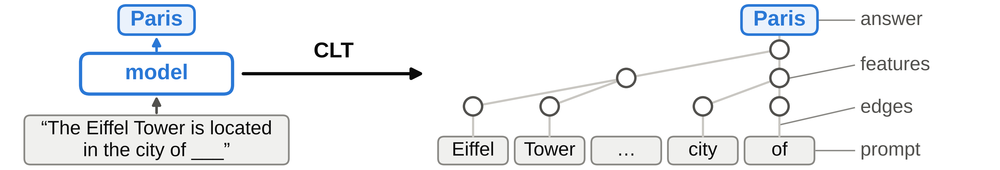
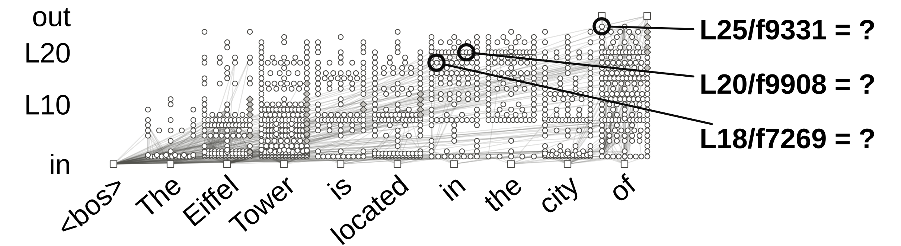
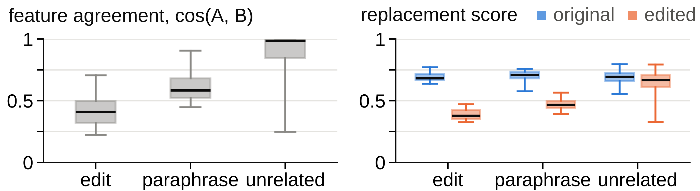
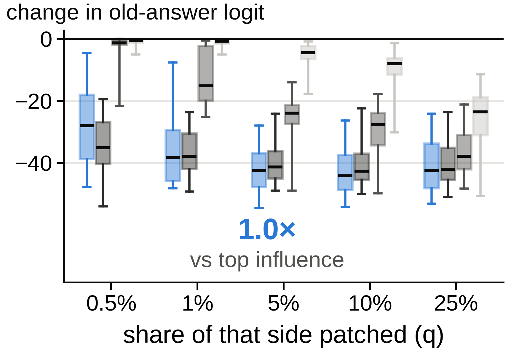
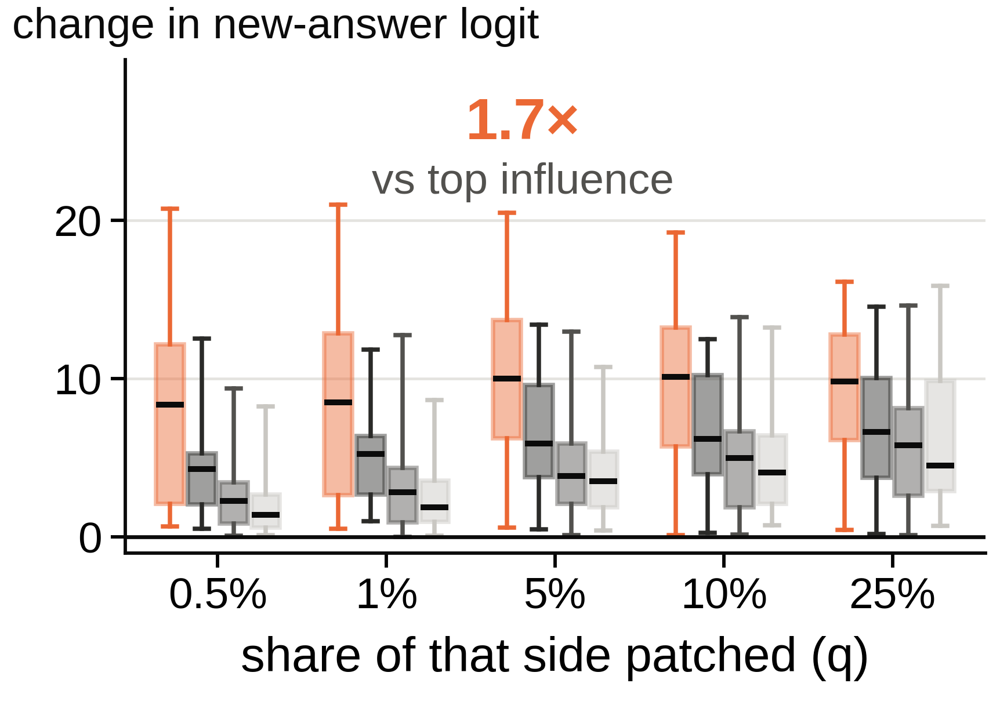
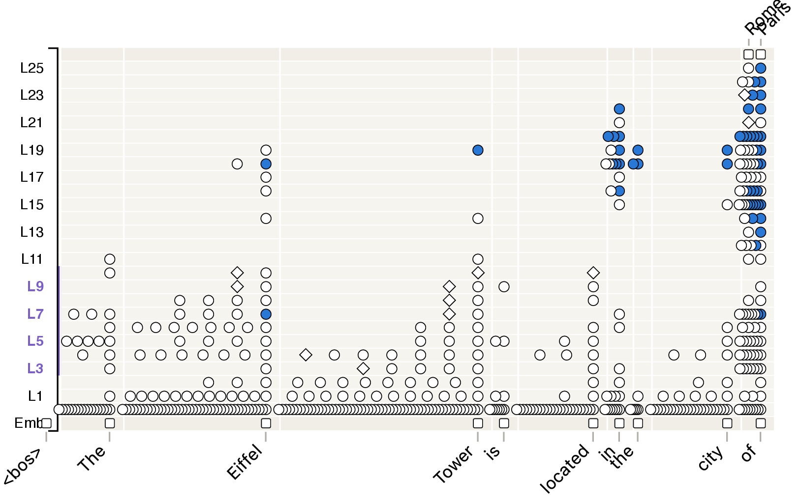
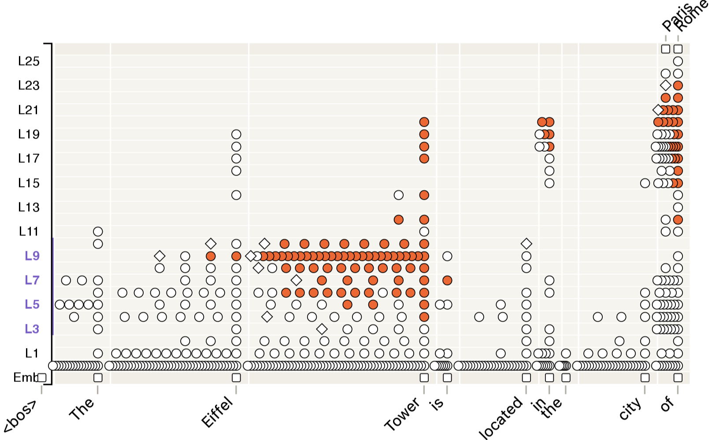
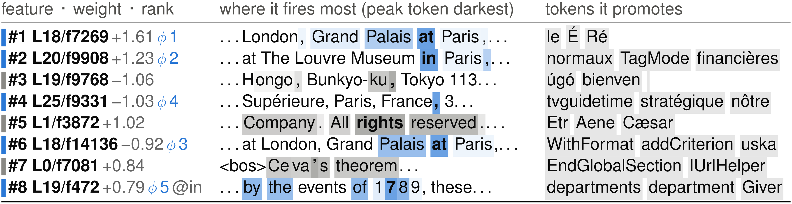
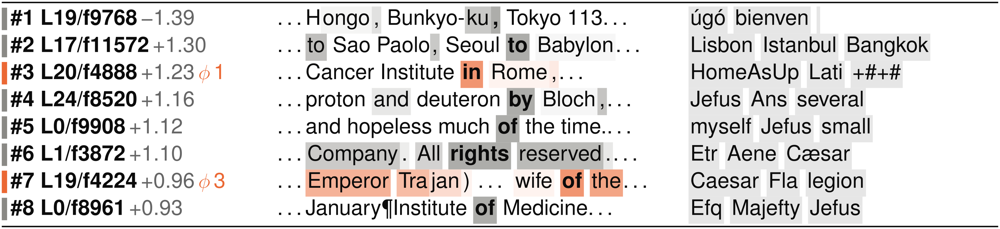
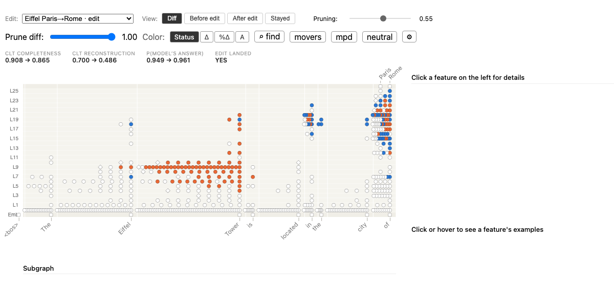

![The five steps of Circuit-Diff. 1, edit one fact: a MEMIT edit on layers 3 to 10 of 26 turns the original model M0, which answers Paris, into the edited model Me, which answers Rome. 2, trace both models: the same frozen CLT T0 builds graph A for the original and graph B for the edited model. 3, diff the graphs: nodes only in A disappeared with delta equal to minus one, nodes only in B appeared with delta equal to plus one. 4, control threshold: keep only nodes whose activation change exceeds the threshold set by neighborhood prompts. 5, rank each side by the score phi, the absolute delta to the power alpha times the change in logit influence. Below: recurrence across edits, where L18/f7269 is top-ranked in 4 of 25 edits, all French facts, and L7/f12622 is top-ranked in 12 of 25 unrelated edits.](fig/m_flow_wide.png)
AI usage disclaimer: AI was used to create and write most of this website. While much was pushed from our paper, we plan to still rewrite and make more concise in the future.
Factual Edit-based Intervention Method for Localizing Knowledge in Attribution Graphs
By editing one fact in a model and comparing attribution graphs, one can locate the features that carry it: those that disappear hold the old answer, those that appear hold the new one.
It works: patching these features moves the answer as much as the top-influence features, or more.
A cross-layer transcoder (CLT) turns a language model’s computation on a prompt into an attribution graph: a sparse circuit of features, with weighted edges running from the prompt into the answer. The graph is a real object. You can inspect it, prune it, and intervene on it.


Reading a graph means cutting it down to the nodes that matter and then working out, one feature at a time, what each surviving node is for, usually by scrolling through the text that makes it fire. Every new prompt, every new question, starts that process over.
Instead of labeling the graph, change the model and watch what moves. Take a fact the model knows, the Eiffel Tower is in Paris, and overwrite it with a low-rank MEMIT edit so the model now says Rome. Build the attribution graph before and after, through the same transcoder, held frozen. Because the lens does not change, any difference between the two graphs is a difference in the model, not in the dictionary you are reading it through. The five steps are the figure at the top of this page.
A fair worry: if the edit damages the transcoder’s fit to the model, the diff could be reading noise. We measured. The damage is real and it lands exactly where the edit does. On the edited prompt the graphs disagree most and the replacement score falls. On paraphrases the drop is smaller, and on unrelated prompts nothing moves.

The selected nodes are patched back into the unedited model. Appeared nodes are scored on whether installing them reproduces the edit, raising the Rome logit. Disappeared nodes are scored on whether suppressing them lowers the Paris logit. Each set is compared against equal-size sets ranked by influence on the answer, ranked by activation, and drawn at random. In short: the features it selects causally carry the fact.


Equal-size sets, patched in the original model, with no control threshold applied. Medians at q = 5%: old answer −42.4 versus −41.3 for top influence (1.0×). New answer 9.98 versus 5.90 (1.7×). With the control threshold applied, top influence leads on the old-answer side. Single nodes rarely move the logit alone, since a concept is split across several features, so the group result is the one that matters.
“The Eiffel Tower is located in the city of ___” Paris→Rome




Bar: blue = disappeared, orange = appeared, gray = in both graphs. φ n = rank by Circuit-Diff. Snippets show where each feature fires most, peak token darkest.
These are not detectors of the word Rome. They are the geography, history and associations around the old and new objects: the Grand Palais, the Louvre and 1789 on the Paris side, Rome and Emperor Trajan on the other. The same reading holds on other edits. Moving the Taj Mahal’s religion trades a Shah / Allah feature for Protestant / Christian / churches. Moving the Pentium II from Intel to Microsoft trades Hyper-Threading enabled CPU for a feature that fires inside Transact-SQL documentation.
The demo is the Eiffel Tower edit above, in a forked attribution-graph viewer: orange is appeared, blue is disappeared, gray is unchanged, with the ranked movers list and the feature dashboards wired in.

The library is open source on GitHub and pip-installable, and a precomputed bundle for this edit ships with it, so the viewer runs with no GPU and no model download:
pip install circuit-diff cs load circuit_diff/examples/bundles/eiffel --serve
Loading, viewing and ranking a bundle needs only pandas. Building new graphs and running the causal patching needs a GPU and circuit-tracer. Two further tools ship alongside: multi-prompt aggregation, and rule-based grouping of features into supernodes. The summary tables behind every figure in the paper are released as a dataset on Hugging Face.